Quarto to me is one of the best thing ever from Rstudioconf 2022 last year, POSIT (previously Rstudio) marketed it as an open source tool to create documents, presentation, books, website easy and inclusive for python users. This is huge, cause for the longest time, there is not an easy way to create website out of a notebook, nbdev might be one of those people to facilitate this, but not at the support and scale of which R-people get (Xaringan, Blogdown for Hugo, or Distill for Rmarkdown, etc).
Why Creating A Personal Website
A personal website is a great way to showcase our project to the world. Sure there is even a no-code platform like medium that you can use, but there are couple things I think it fall shorts on:
Pay Gate Wall
It is good if you are getting paid for what you were sharing on, but if your main purpose is for branding yourself (like me), then a pay gate wall would not do you any good (Figure 1). Especially, when you have just started on. Though it is fairly cheap, it is just another stopper for your first audience. Worse, the paid-subscription is only available for certain countries, Indonesia for example is not supported.
Figure 1: Pay Gate in medium.com
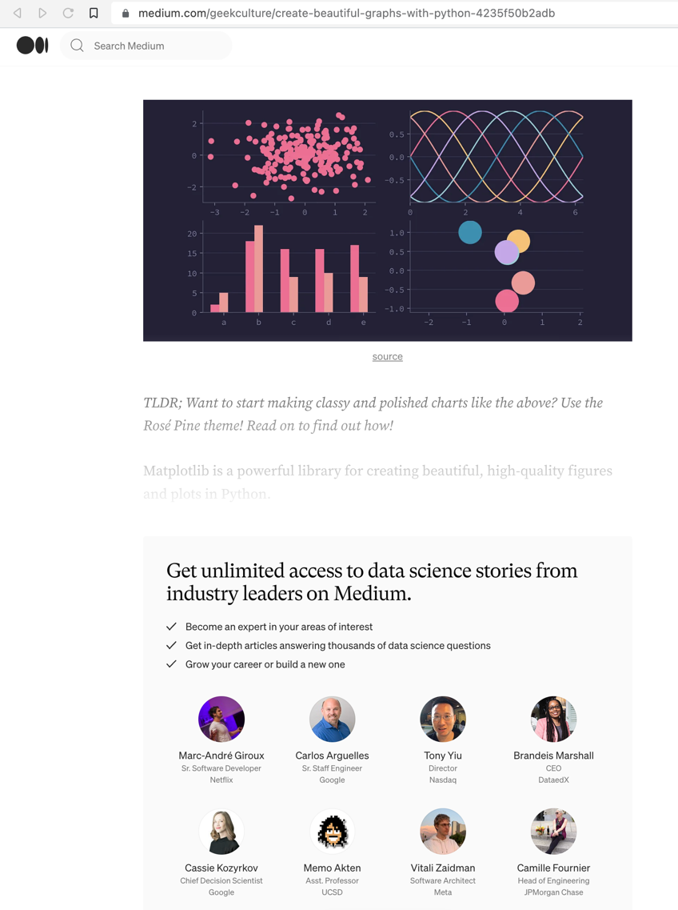
Reproducibility
When I do my first data-science project, I wanted to make sure that someone can just follow along and then get the same result as I was. Using platform like medium, I could not really do that, and I believe it was not meant for tutorial in details. Rather it was for an explanatory writing, rather than exploratory writing. Quarto with its rendered codes as an output, makes it easier to do just that. The below code cell is me importing libraries, importing a dataset, and displaying the table.
Code
#importing librariesimport pandas as pdimport hvplot.pandasfrom bokeh.sampledata.penguins import data as penguins#displaying first 5 rowspenguins.head()
species
island
bill_length_mm
bill_depth_mm
flipper_length_mm
body_mass_g
sex
0
Adelie
Torgersen
39.1
18.7
181.0
3750.0
MALE
1
Adelie
Torgersen
39.5
17.4
186.0
3800.0
FEMALE
2
Adelie
Torgersen
40.3
18.0
195.0
3250.0
FEMALE
3
Adelie
Torgersen
NaN
NaN
NaN
NaN
NaN
4
Adelie
Torgersen
36.7
19.3
193.0
3450.0
FEMALE
What if I want to show the last 6 rows? I can just change the code.
Code
#importing librariesimport pandas as pdimport hvplot.pandasfrom bokeh.sampledata.penguins import data as penguins#displaying first 5 rowspenguins.tail(6)
species
island
bill_length_mm
bill_depth_mm
flipper_length_mm
body_mass_g
sex
338
Gentoo
Biscoe
47.2
13.7
214.0
4925.0
FEMALE
339
Gentoo
Biscoe
NaN
NaN
NaN
NaN
NaN
340
Gentoo
Biscoe
46.8
14.3
215.0
4850.0
FEMALE
341
Gentoo
Biscoe
50.4
15.7
222.0
5750.0
MALE
342
Gentoo
Biscoe
45.2
14.8
212.0
5200.0
FEMALE
343
Gentoo
Biscoe
49.9
16.1
213.0
5400.0
MALE
3. Contents Ownership
If one day the platform (medium) goes bankrupt, I have no worry because I kept all my posts in a github, and my local folder. If the domain is somehow being hacked, I can just changed it. I own the content, and nobody else.
This gives you not only a total control, but also a freedom to experiment to your heart desires.
Now I should assume that you know what a github is, know what a terminal is, and know how to google. With that, there are really just three things that you need to have:
With that out of the way, here are the following steps to create your first personal website:
Creating a Repo
Make a new repository with the same name as your github account. For example, if your github account is johndoe, then make a new repository named john.github.io (see Figure 2).
Figure 2: Creating a New Repo
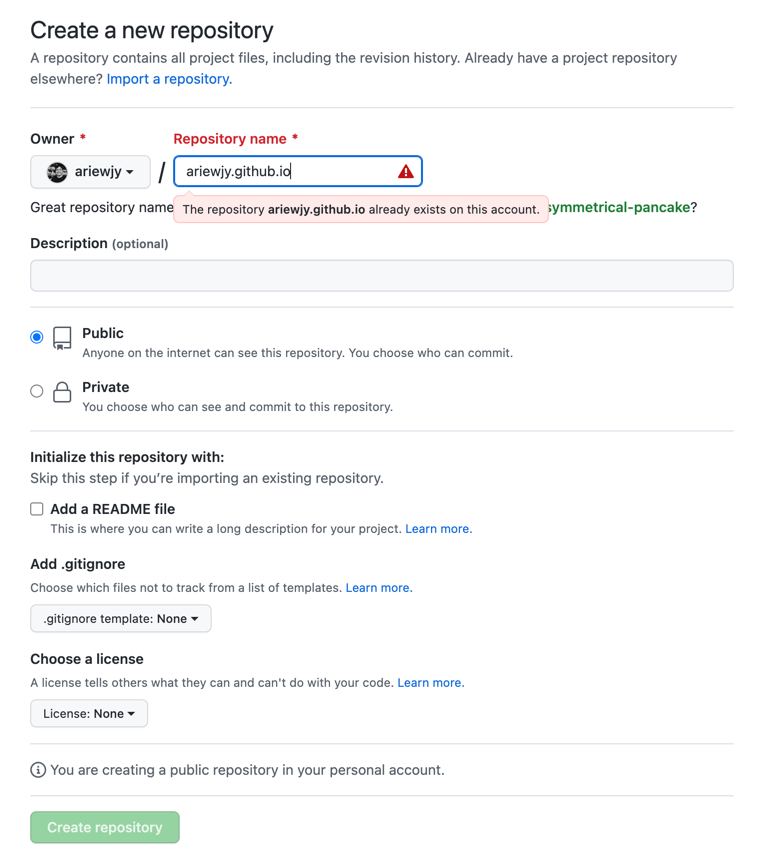
What’s cool about this repo is it will be accessible later on as a domain for your personal website, completely free, and secure (https). This of course can be customized with a domain of your choice, but for now, we want to make this as easy as possible.
Starting from a Notebook
Let’s make a content, using jupyter notebook, with a combination of code cells and markdown cells. I am gonna use the content in this post, where I load a libraries, dataset from palmerpenguins, and then I will do some plotting using altair to spice things up, cause why not. See below Figure 3 for example.
The first step is to create a set of folders for website project, using quarto by executing the following command inside the project folder:
mkdir postsquarto create-project . --type website
which will output the following Figure 4, essentially the post folder would be where we keep our blogpost files.
Figure 4: Output Projects
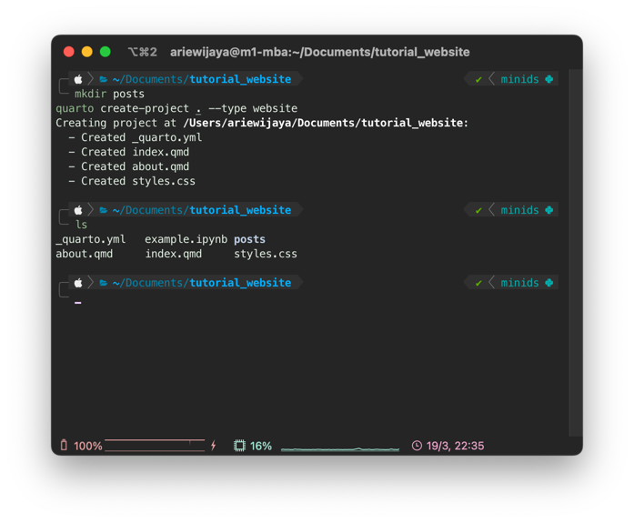
Convert Notebook to Quarto Markdown
The second step is to convert the jupyter notebook file (example.ipynb) to quarto markdown file (example.qmd) by running the following command:
quarto convert ./example.ipynb
which will create an output of qmd file which is important, because this would then be rendered to html (as shown in Figure 5) by running the following command:
quarto render
Figure 5: Output Render
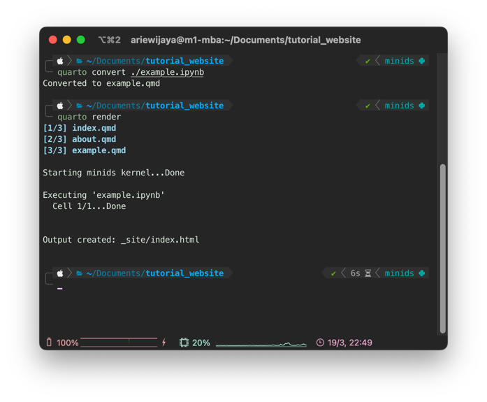
Setting-up the Website
YAML file is basically where we fine tune our website settings. For this case, we need to move the example.qmd file to post folder, and add the qmd file inside the navbar, below the about.qmd as shown in Figure 6
Figure 6: YAML setting
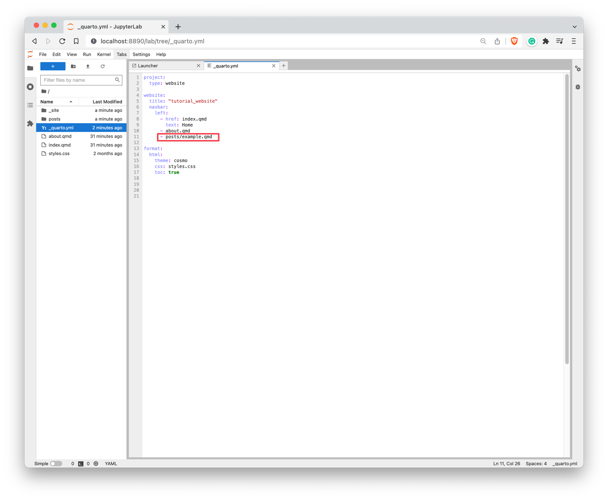
Previewing the Website
All things set, now all we need to do is preview our website by running the following command:
quarto preview
which will output our new website inside a browser as shown in the following Figure 7. This is a preview mode which means, any changes made to the website, it will be rendered and displayed real-time.
Figure 7: Website Preview
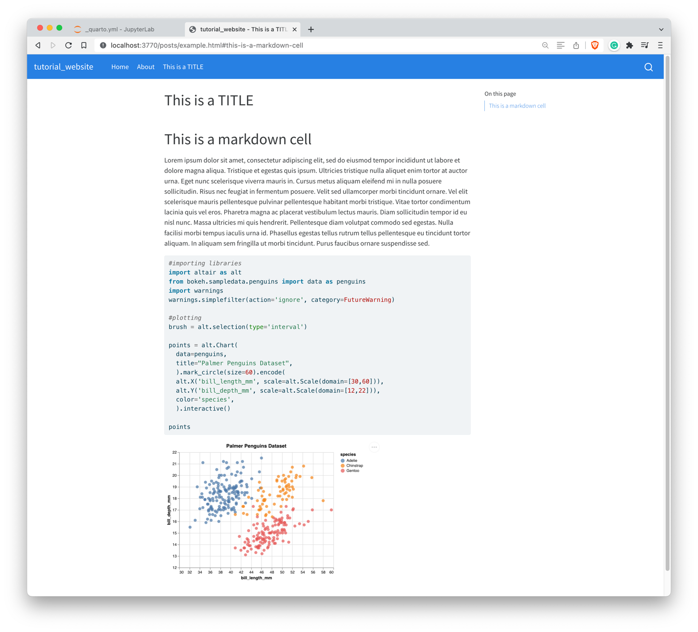
Voila! You got it done! Congrats!
Deploying the Website
There is a documentation on Quarto to do this, but in layman terms, there are essentially three things to do:
Create a docs folder and set the output to be that folder in _quarto.yml file as shown in Figure 8 below
Figure 8: docs settting
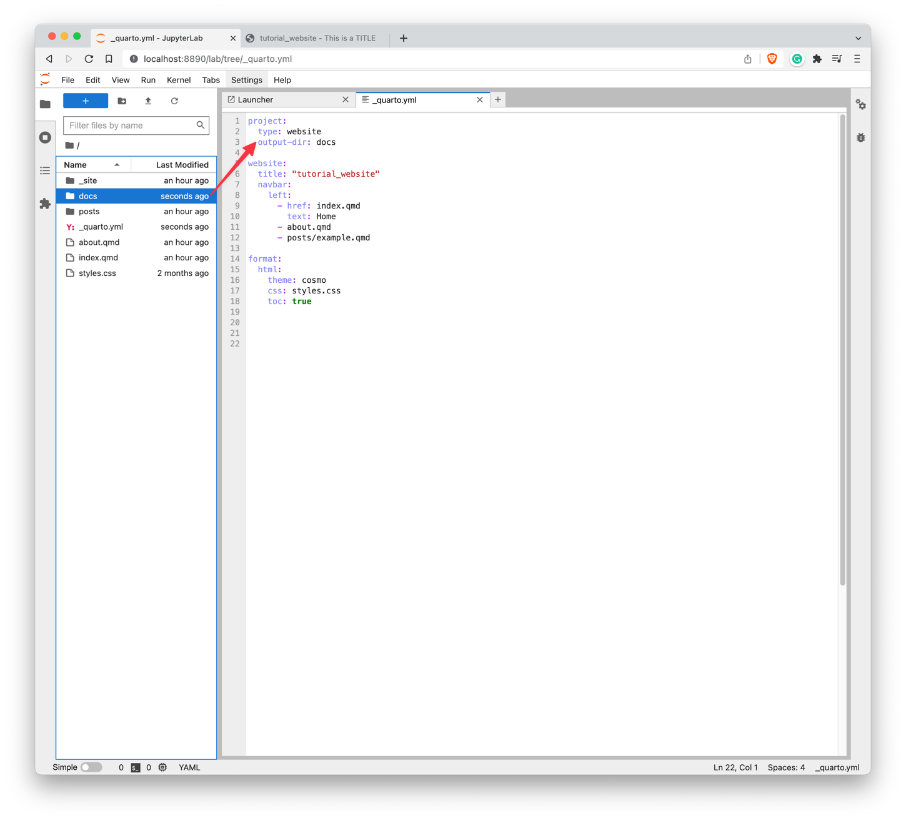
Set the website repo setting to use the docs folder as the branch source as shown in Figure 9 below
Figure 9: repo settting
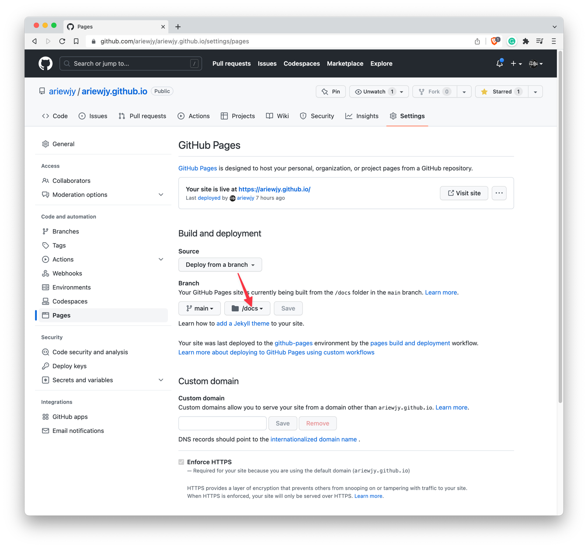
Push your local Repo to the Github!
git add .git commit -m "my first website"git push
and you should see your website is up and running after the builds and deployment as shown in Figure 10 finished!
Figure 10: Builds Up and Deployment
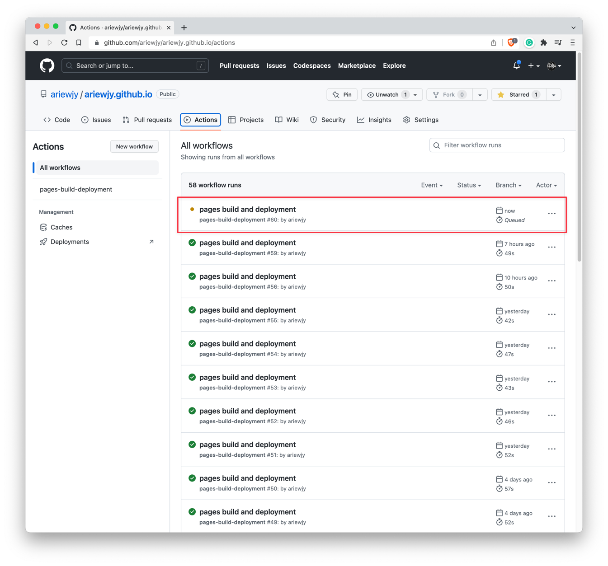
Important
Since this is a static pages, we will have to run quarto-render everytime before pushing it to the github. Otherwise, it may appear in our preview-mode, but will not show up in the website online.
Pro Tips
1. Make A Homepage
If you have your website deployed, congrats! However, if you stay, I can assure you that it will make your website much better.
Some nicer things to do for your website is to render the index.qmd in the root folder as a listing, so any post in your post folder will be listed as a content, as shown in Figure 11 below:
Figure 11: Setting Up the Website
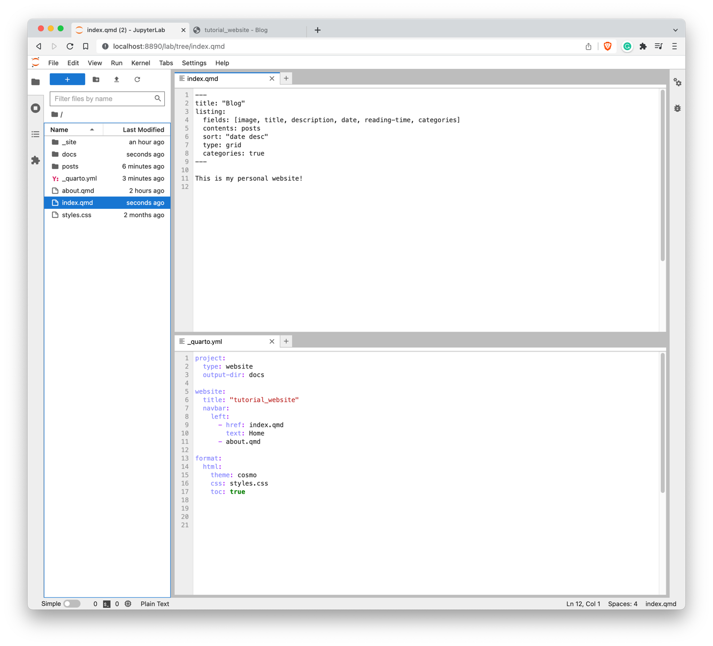
Here is what I did to the initial website:
Make a folder inside posts, create a 001-first-post folder, and change the filename to index.qmd
Edit the index.qmd in the root folder to list the contents
Edit the _quarto.yml file back to its original setting.
With this setting, you will have a nicer homepage like Figure 12 below:
Figure 12: Homepage
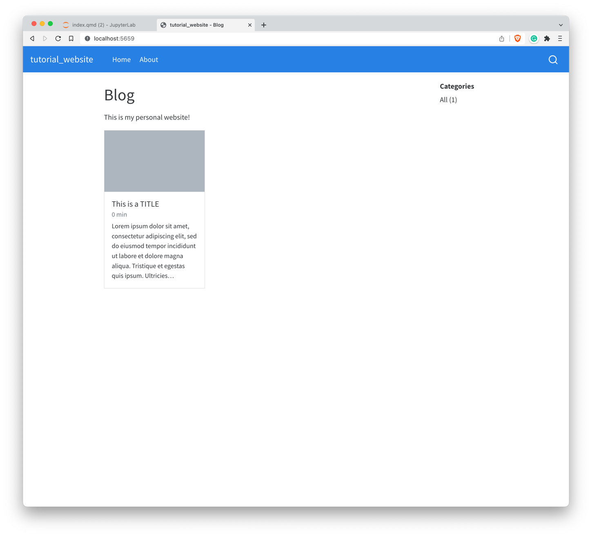
2. Use Quarto in VSCode
Although so far we can get by just by using jupyter notebook, we were missing out (big time) in quarto extension capabilities. Autocompletion, autosuggestions, which are available in VSCode but not the jupyter notebook.
Using VSCode and Quarto, we can easily shift between visual-mode and source-mode, for a nicer GUI. You can just right-click and select edit in visual-mode and it will automatically brings you to a GUI version of the markdown.
From there, we can change the heading-style, bold, italic, add numbers, lists, picture, callnote, a very powerful GUI for markdown! Loved it!
One of the nicest things that I used A LOT is the ability to just copy-paste an image from clipboard to a qmd file via visual-mode, and it will automatically create a folder named images, save the image we pasted into the folder, and displayed it (by referencing) into the qmd file. All happen instaneously!
3. Craving for More?
There is a good chance that this blogpost would not be enough for you after you add some more contents, and wanted to change some views/ aesthetics of the websites. My suggestion has always been to the excellent Quarto documentations for website, Mickael make a repo dedicated just for Quarto (extensions, slides, tutorial and alike) make sure to check his repo, follow him also in twitter, as I always find the latest new things from him from there like this one:
🤖 From #AwesomeQuarto: 'How to add some personality to your Quarto Blog' (https://t.co/nK3j7rPty1) A blog post sharing some of the added features and tweaks users can make on top of the standard blog templates to inject some personality into their blog.#QuartoPub
— Mickaël CANOUIL (@MickaelCanouil@fosstodon.org) (@MickaelCanouil) March 19, 2023
Footnotes
you can just use a notebook, but some of the autocompletion, visual-mode (a powerful mode to make blogging easier) won’t work.↩︎
Citation
BibTeX citation:
@online{arie wijaya2023,
author = {Arie Wijaya, Aditya},
title = {Personal {Website} Using {Jupyter} {Notebook} and {Quarto}},
date = {2023-03-20},
url = {https://adtarie.net/posts/007-quarto-python-tutorial},
langid = {en}
}